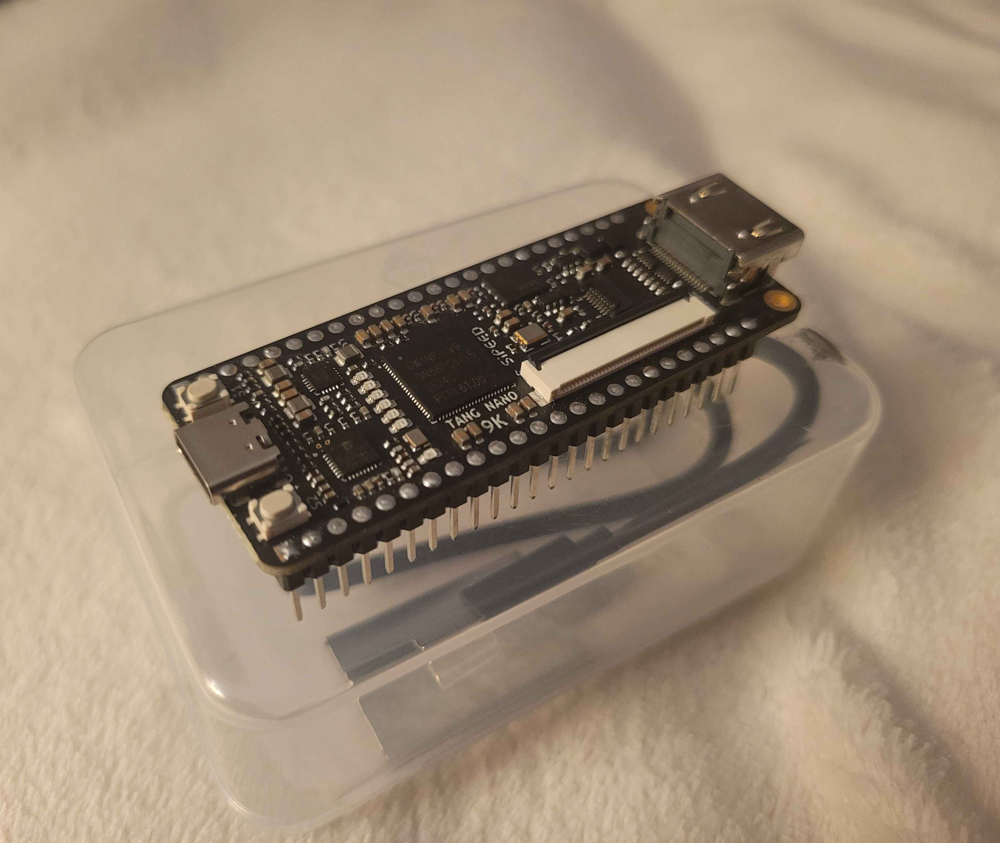

GR8GG - A custom 8-bit processor
While still in it's infancy, this project will hopefully end up as a fully functional 8-bit processor. The final goal is to make my own instruction set and (with a microcontroller for IO), have a functional computer, and possibly a small operating system.
This project is currently being developed with Verilog and a SiPEED Tang Nano 9k as an FPGA (my photo pictured above), this may eventually be changed if better hardware is required.
As of right now, this project is in its very beggining phases, as I am still actively learning Verilog, how to properly interface with an FPGA. The repository below will be updated as I progress
DROUGHT - A retro-inspired videogame
While still in it's infancy, this project will hopefully end up as a fully functional 8-bit processor. The final goal is to make my own instruction set and (with a microcontroller for IO), have a functional computer, and possibly a small operating system.
This project is currently being developed with Verilog and a SiPEED Tang Nano 9k as an FPGA (my photo pictured above), this may eventually be changed if better hardware is required.
As of right now, this project is in its very beggining phases, as I am still actively learning Verilog, how to properly interface with an FPGA. The repository below will be updated as I progress